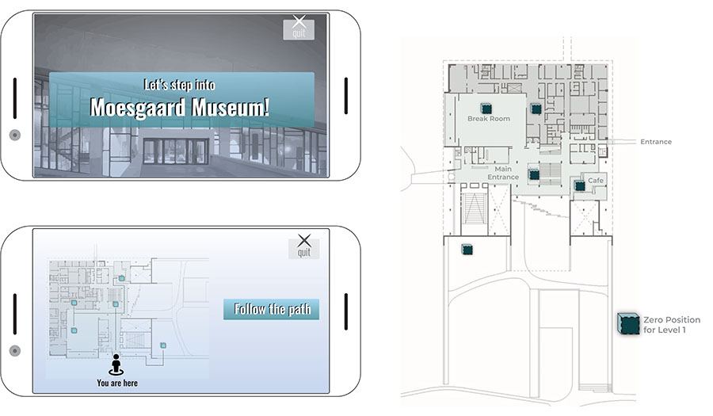
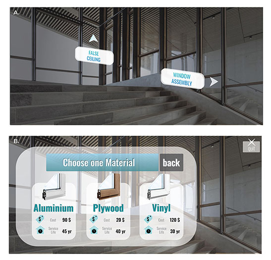

According to a recent report by the Intergovernmental Panel on Climate Change, global warming is likely
to reach 1.5°C between 2030 and 2052. The building industry alone contributes to 45% of worldwide
emissions, almost 40% of which is driven by the global material flows. As advancements have
substantially reduced energy required for operation, embodied carbon through the materials remains
static and must be tackled to avoid climate catastrophe. However, the embodied carbon of each product is
mainly unknown to the final consumer of a building. Oblivious to carbon, there is no incentive within
the citizens to address these emissions. Carbon Crunch is an augmented reality mobile game that educates
individuals on the environmental impacts of building materials and empowers them for making better
decisions. The game employs the global warming potential of building components, and users will be able
to swap out assemblies to maximize carbon savings.
The task of this assignment was to compose & interpret a contemporary still life. We had to choose a
collection of real-world objects for our composition. 3D-Scan the chosen objects using the workflows
described in the attached documents or any other of your own.
Then, we 3D-Scan the chosen objects using smartphone apps like Qlone and Trino. The goal was to obtain
colored 3D meshes from them, and apply algorithms for mesh manipulation.
We scanned objects using Meshroom, and the post processing including mesh trimming and texture mapping
were done in Blender.
Carbon Crunch
An interactive game to interpret and analyze the carbon footprint caused by building materials
Presented at Public Play
Space Symposium,
July 2021
Team: Aakrity Madhan, Adam Yarnell , Kritika Kharbanda
Developed as part of SCI 6338 at Harvard Graduate School of Design
Instructed by: Jose Luis Garcia del Castillo Lopez
Professional Advisor: Jakob Strømann-Andersen, Henning Larsen Architects
Underlying Principles:
Gamification and Serious Games for the co-design of Public Space
Carbon footprint of building materials
Augmented reality